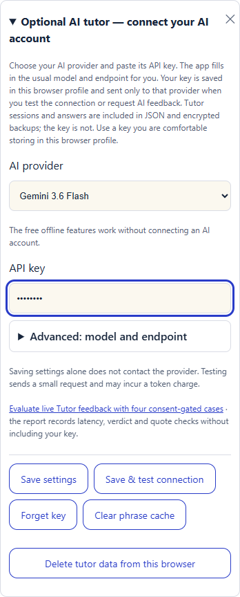
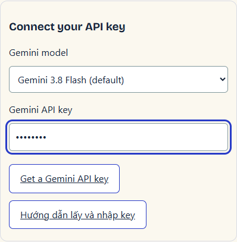

Cách lấy và nhập Gemini API key
Dùng key của bạn để tạo bài khi có mạng, rồi lưu bài để học offline.
1. Tạo key trong Google AI Studio
- Mở trang API Keys và đăng nhập Google.
- Chọn Create API key. Chọn dự án Google nếu được hỏi.
- Chọn Copy để sao chép key. Xem hướng dẫn của Google.
Hạn mức Free Tier tùy dự án Google.
2. Nhập key vào HọcTA
Để tạo bài từ Reader, Sổ tay, Ôn tập, TOEIC hoặc Luyện viết, mở Cài đặt nâng cao → Learning → Optional AI tutor, dán key vào ô API key và bấm Save settings.

Nếu bạn dùng Studio
Mở Gemini online trong Studio, chọn model và dán key vào ô Gemini API key. Key của Studio được giữ trong tab đang mở.

3. Tạo bài rồi lưu để học offline
Mở chức năng bạn muốn dùng, xem lại nội dung trước khi gửi đến Gemini. Khi bài được tạo, kiểm tra câu hỏi rồi chọn Lưu để học offline.